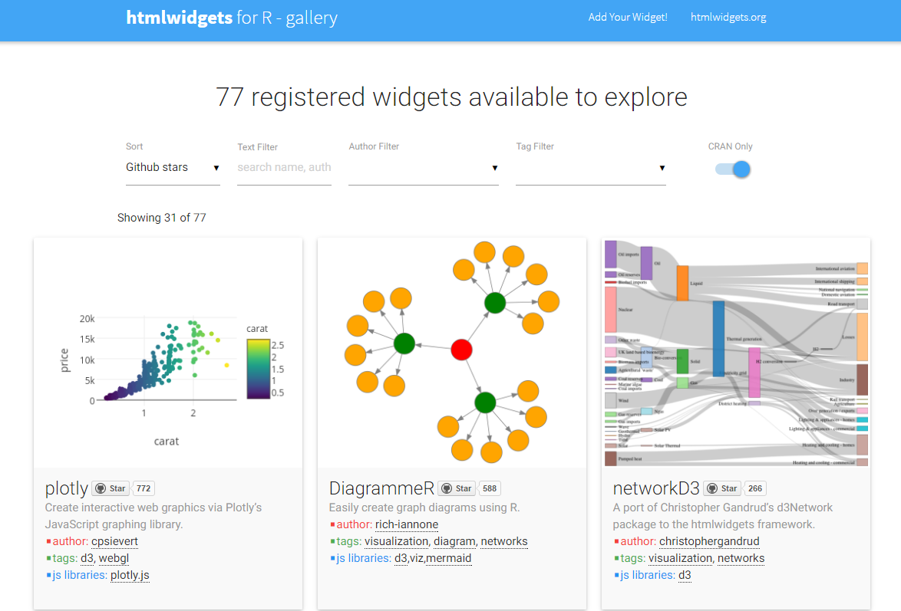
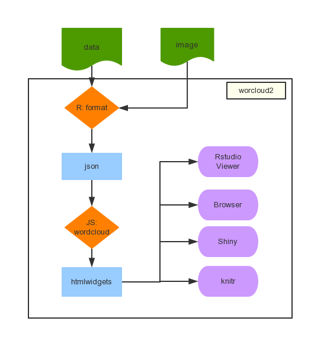
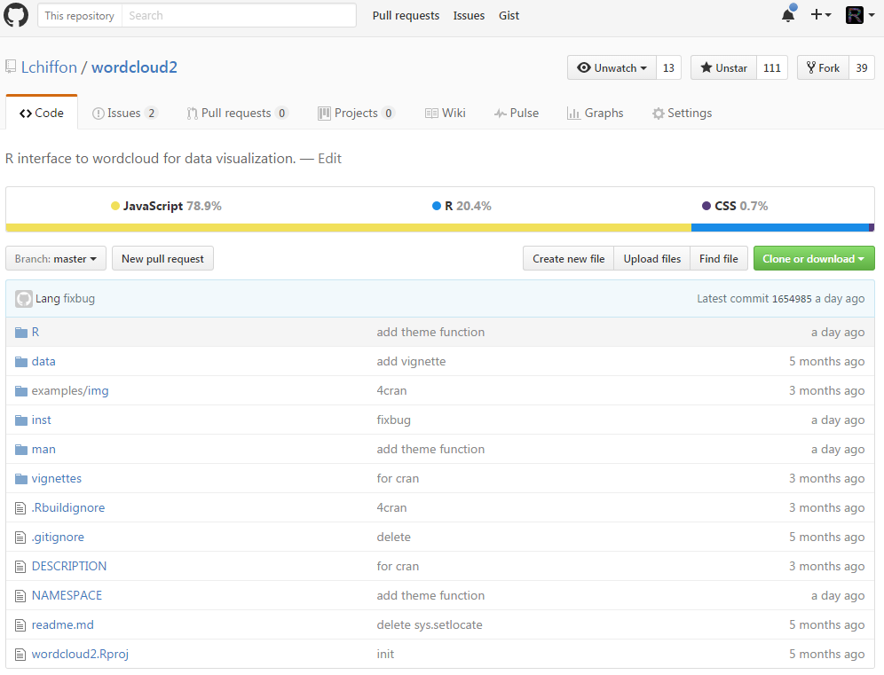
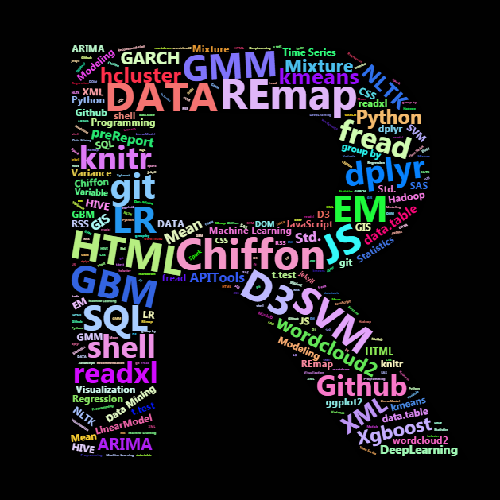
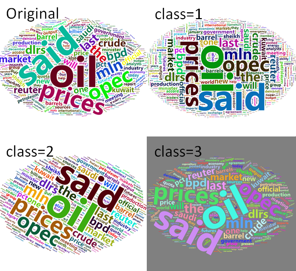

Created by Chiffon郎大为
J.D. Power 数据分析师
latticeggplot2corrmap

install.packages("wordcloud2")
devtools::install_github("lchiffon/wordcloud2")

library(wordcloud)
wordcloud(demoFreq[,1],demoFreq[,2])
library(wordcloud2)
wordcloud2(demoFreq)
figPath = system.file("examples/t.png",package = "wordcloud2")
wordcloud2(demoFreq,
figPath = figPath,
size = 1.5,
color = "skyblue")
@微信: wetalkdata
library(wordcloud2)
letterCloud(dat,"R",
color = "random-light",
backgroundColor = "black",
size = 0.3)

wc = wordcloud2(demoFreq,
fontFamily='微软雅黑')
wc + WCtheme(class = 1)
## class: 1,2,3

可用参数:
| 参数名 | 含义 | 取值 |
|---|---|---|
| size | 大小 | 1为默认值 |
| fontFamily | 字体 | 'Segoe UI' |
| color | 颜色 | 'random-dark' |
| backgroundColor | 背景色 | 'white' |
| minRotation | 最小角度 | -pi/4 |
| maxRotation | 最大角度 | pi/4 |
| rotateRatio | 旋转比例 | 0.4 |
| shape | 形状 | 'circle' |
| figPath | 图像 | 图片路径 |
| hoverFunction | JS函数 | 动态函数 |
wordcloud2(demoFreqC,size = 0.5,
fontFamily = '微软雅黑')
wordcloud2(demoFreqC,size = 2,
fontFamily = '微软雅黑')
webshot packagesinstall.packages("webshot")
webshot::install_phantomjs()
library(wordcloud2)
hw = wordcloud2(demoFreq,size = 3)
saveWidget(hw,"demo.html",selfcontained = F)
webshot::webshot("demo.html","demo.png",
vwidth = 800, vheight = 600, delay =3)
wordcloud2Output(outputId, width = "100%", height = "400px")
renderWordcloud2(expr, env = parent.frame(), quoted = FALSE)
install.packages("webshot")
webshot::install_phantomjs()
Sys.setlocale("LC_CTYPE", "chs")